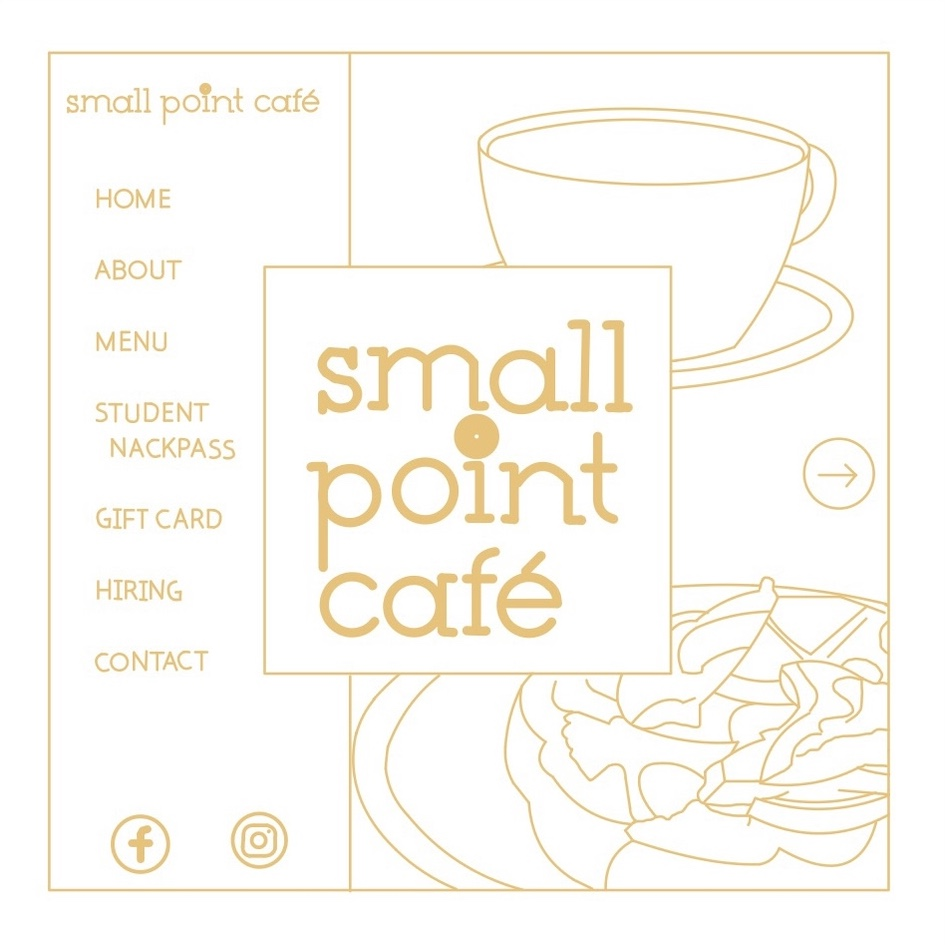
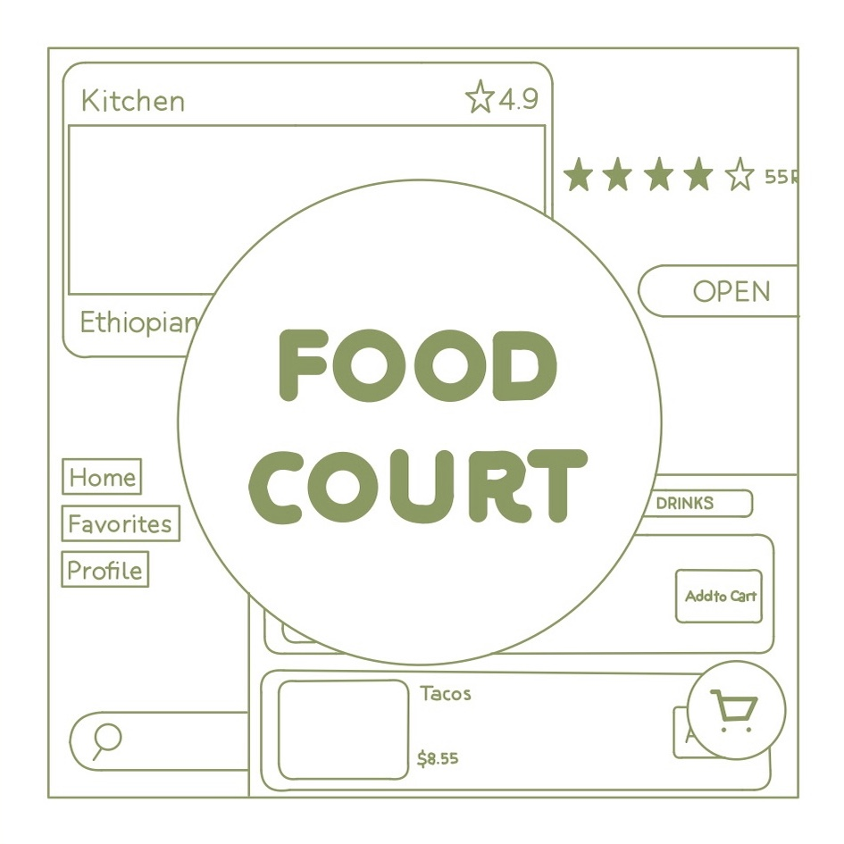
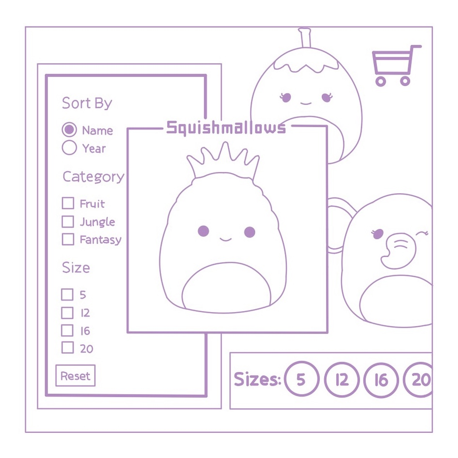

Personas and Storyboarding is a project designed to understand an interface, the Ten One Tea House Snackpass Kiosk, through the user's persepective by creating personas and a storyboard for one of the personas.
Responsive Redesign is a project practicing the workflow of redesigning a simple website, from identifying flaws in an existing interface to creating low and high fidelity prototypes to building the site itself.
Iterative Design is a project desinging an interactice interface for an emerging startup, and working through the process of mocking up a solution to the startup's concept and adjusting designs based on critiques.
Development is a project creating an interactive interface, a Squishmallows site, that includes a sorting feature, filtering feautres, a reset feature, and a cart feature.